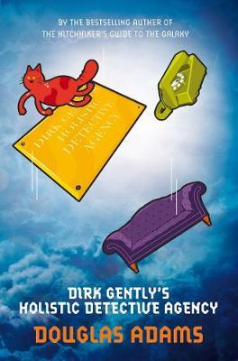
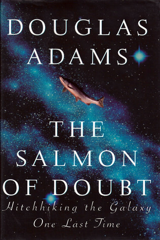

Related Searches
 
Adam, Dougles
The Hitchhiker's Guide tothe Galaxy
Seconds before the Earth is demolished to make way for a galactic freeway, Arthur Dent is plucked off the planet by his friend Ford Prefect, a researcher for the revised edition of The Hitchhiker's Guide to the Galaxy who, for the last fifteen years, has been posing as an out-of-work actor.
Together this dynamic pair begin a journey through space aided by quotes from The Hitchhiker's Guide ("A towel is about the most massively useful thing an interstellar hitchhiker can have") and a galaxy-full of fellow travelers: Zaphod Beeblebrox—the two-headed, three-armed ex-hippie and totally out-to-lunch president of the galaxy; Trillian, Zaphod's girlfriend (formally Tricia McMillan), whom Arthur tried to pick up at a cocktail party once upon a time zone; Marvin, a paranoid, brilliant, and chronically depressed robot; Veet Voojagig, a former graduate student who is obsessed with the disappearance of all the ballpoint pens he bought over the years.